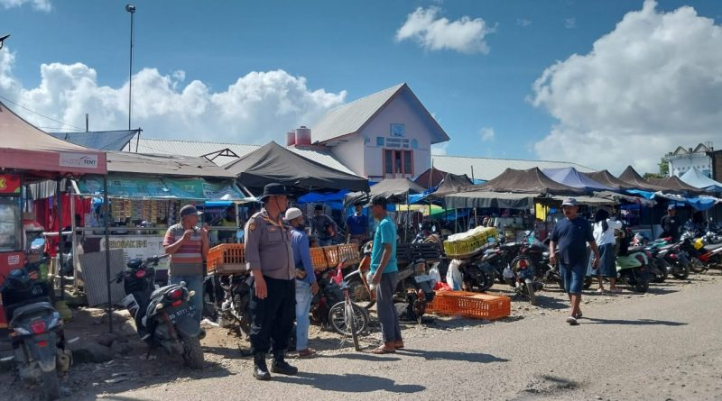
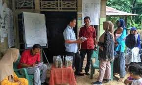
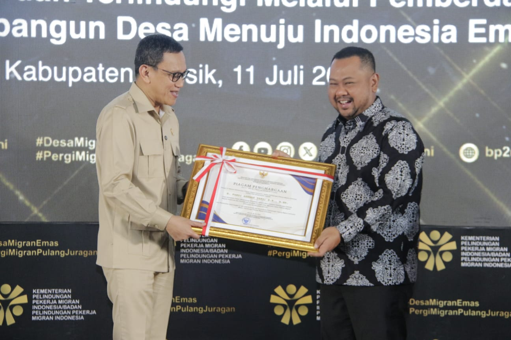
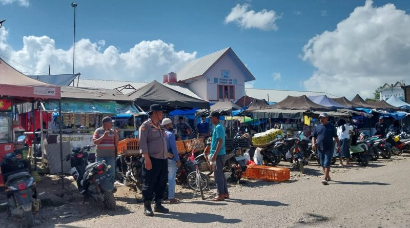
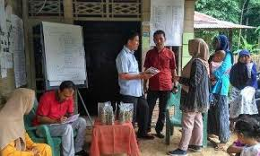
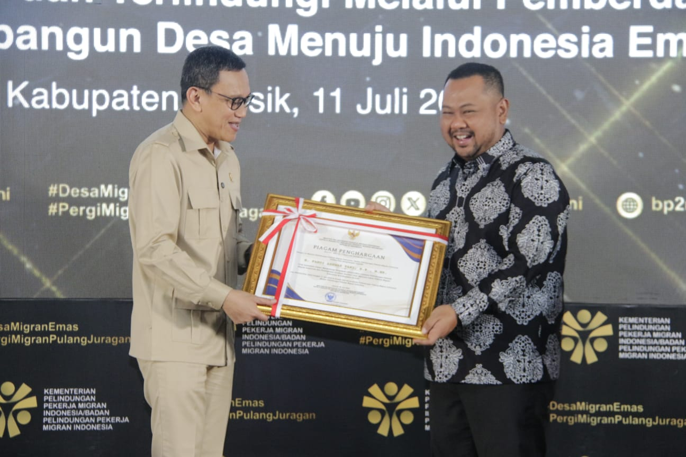

Solusi Mengatasi Tantangan SDGs 10
Solusi untuk mengurangi ketimpangan membutuhkan kombinasi pemberdayaan ekonomi, kebijakan sosial, perlindungan kelompok rentan, serta kerja sama internasional. Langkah ini mencakup akses layanan dasar yang merata, perlindungan sosial, dan menghapus kebijakan diskriminatif.
Pemberdayaan Ekonomi
- Meningkatkan pendapatan kelompok 40% masyarakat termiskin.
- Memperluas bantuan sosial.
- Memastikan akses pendidikan, kesehatan, dan pekerjaan.
Kebijakan & Pasar
- Pajak progresif & upah layak.
- Pengawasan keuangan global.
- Menguatkan posisi negara berkembang dalam lembaga keuangan internasional.
Migrasi Aman
- Mempermudah migrasi legal.
- Menurunkan biaya remitansi hingga di bawah 3%.
Dukungan Internasional
- Membantu negara berkembang melalui perdagangan, investasi, dan bantuan resmi.